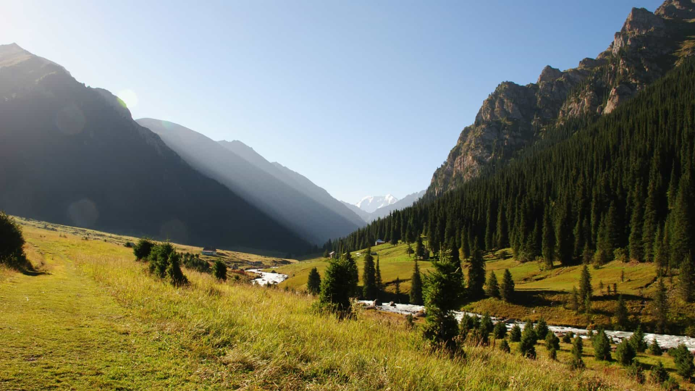
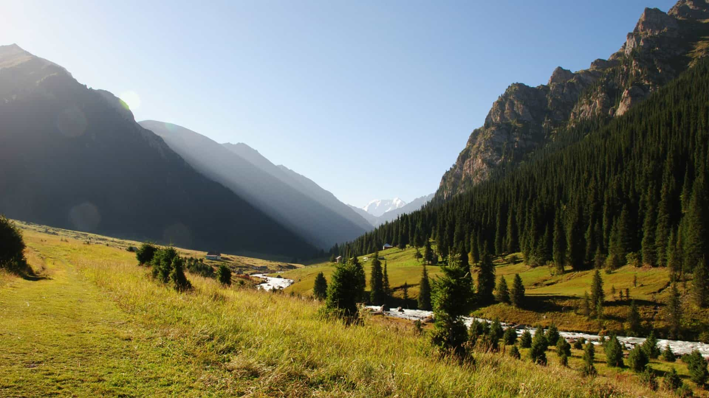

1Бишкек
Прибытие в Бишкек. Размещение по отелям. Отдых. Сити-тур : Филармония,площадь Ала-Тоо,ош-базар,ЦУМ,памятник Курманжан Датке,парк Победы , самая большая мечеть в Центральной Азии и мн. др. Возвращение в отели. Ночь в отеле.

 


Кыргызстан — уникальная страна с великолепной природой. В стране сохранились большие территории, почти не тронутые человеком. Люди здесь до сих пор передают древние традиции кочевников из поколения в поколение. Жемчужина страны — горное озеро Иссык-Куль. Территорию Кыргызстана на 94% покрывают горы, поэтому Кыргызстан часто называют Швейцарией Средней Азии из-за необычайно красивого гористого пейзажа Центрального Тянь-Шаня. Большинство путешественников находят Кыргызстан наиболее привлекательным, доступным и дружелюбным регионом из всех центральноазиатских республик
Чистейший горный воздух, кристально-чистые озера, родниковая вода, снежные вершины гор, заповедники – все это природа Кыргызстана. Уникальная по своей неповторимой красоте, разная во все времена года горная природа является главным богатством Кыргызской Республики.
1Бишкек
Прибытие в Бишкек. Размещение по отелям. Отдых. Сити-тур : Филармония,площадь Ала-Тоо,ош-базар,ЦУМ,памятник Курманжан Датке,парк Победы , самая большая мечеть в Центральной Азии и мн. др. Возвращение в отели. Ночь в отеле.
2Ысык-Ата
Выезд в Ысык-Ату. Здесь вам будет предоставлена возможность искупаться в горячих источниках и насладиться свежестью горного воздуха. Пикник на свежем воздухе. После выезд в Беш-Таш. Беш-Таш-природный парк,территория которой поражает своей красотой,богатой фауной,великолепием озеры,находящееся на высоте 2997 м. Летом ущелье выглядят очень красиво. По склонам разбросаны арчовые заросли. В верховьях ущелий по правым склонам встречаются редколесья из ели и арчи. Выше границы лесолуговой зоны начинаются ярко-зеленые альпийские луга. Ночевка в юртах.
3Беш-Таш
Утром вы проснетесь в живописном месте,территория которой окружена зелеными полянами, холмами,горами и наполните ваши легкие чистым,горным и свежим воздухом 🙂
После поход на озеро Беш-Таш. Беш-Таш — это самое большое озеро одноименного Беш-Ташского заповедника. Озеро располагается в красивейшем ущелье Беш-Таш, богатым удивительными видами.
Глубина озера составляет 28 метров, а высота на которой находится озеро составляет 3000 метров. Вода имеет удивительный бирюзовый оттенок, что создает отличный контраст с окружающими снежными вершинами и зеленой травой. Пикник возле озера. Ночевка в юртах.
4Суусамыр
Утром выезд в Суусамыр-долину с протяженностью 150 км и которая находится на высоте 2300 м. С севера ее охватывает Кыргызский Ала-Too, с юга и юго-запада — хребет Суусамыр-Тоо. Долина уникальна оздоровительными процедурами-кумысолечением,конными прогулками. В долине протекают две крупных реки: Суусамыр и Западный Каракол, которые сливаясь воедино, образуют бурный и многоводный Кекемерен. Летом здесь бескрайние пастбища,а зимой идельная локация для лыж,сноубордов.Также здесь проводятся программы хелиски (Heli-Ski) — спуски по нетронутым снежным склонам, вдали от подготовленных трасс, с заброской на вертолёте. Отдых в юрте. После отдыха показ национальных игр : кок-бору (козлодрание), кыз-куумай (погоня за девушкой), дегустация национальной кыргызской кухни : кымыз, блюда и другие напитки. Ночевка в юрте.

5Сары-Челек
Утром после завтрака свободное время. Выезд в Сары-Челек-Высокогорное озеро Сары-Челек, по праву считается самым красивым местом на западе Кыргызстана. Оно лежит на высоте 1940 м над уровнем моря в предгорьях Чаткальского хребта. Особенность Сары-Челека — это потрясающая чистота прозрачность воды. Это большая редкость для озер Тянь-Шаня — обычно в горных озерах вода непрозрачная из-за большого количества минеральных примесей. Сары-Челек является исключением. Озеро находится на высоте 1873 метра выше уровня моря и тянется на 7,5 километров в длину. Самая глубокая отметка озера достигает 234 метра. Будет возможность искупаться в кристально чистой воде. После обеда конные прогулки вокруг озера. Вечером костер возле озера,маршмэллоу,игры. Ночь в гостевом доме.
6Арслан-Боб
Выезд в Арслан-Боб. После приезда размещение по гостиницам. Арсланбобская долина находится на юге Кыргызстана и является местом расположения одного из самых красивых курортов. Сам Арсланбоб принадлежит к числу уникальных творений природы, и находится на высоте 1600 метров над уровнем моря. Главным сокровищем этих южных лесов является дерево грецкого ореха. На окраине села Арсланбоб находится Маленький водопад, 24 метра высотой. Этот водопад самая посещаемая достопримечательность в Арсланбобе. В 7 км севернее села находиться Большой водопад, высотой 90 метров. Оттуда открывается панорама на Арсланбоб и видна цепочка гор Алайского хребта. В 6 часах ходьбы от села находится скала Намаз Таш – Молитвенный камень, где по преданию был убит Арстанбап-Ата во время своей молитвы. Святое Озеро Кулан-Ата. До него можно добраться на лошади за 8 часов. Ночь в местной семье.
7Ош
Завтрак с семьей. Выезд в южную столицу Кыргызстана — в город Ош. По приезду размещение по гостинцам. После экскурсия по городу : знаменитая гора — Сулайман — Тоо,музей,ош-базар,дегустация местной кухни : плов,самсы в местной чайхане. Отдых. Свободное время.

8Ош-Бишкек
После завтрака вылет в Бишкек. По приезду в Бишкек размещение в отеле. После выезд на башню Бурану.Башня Бурана, расположенная в 80 километрах от Бишкека, является одним из самых известных археологических памятников Кыргызстана. Здесь находятся важные артефакты, рассказывающие историю Кыргызстана и его роли на Великом Шелковом пути. Великолепная возможность посетить музей,посмотреть на балбанов-каменных идолов (11-12 вв.),а также прекрасный вид на горы и поля. По приезду в Бишкек отдых. Ночь в отеле.
9Бишкек
Возвращение домой. Окончание тура.
В стоимость тура входит:
-Двухместное размещениеДополнительно оплачивается:
-АвиаперелетСоберите собственную группу и путешествуйте с выгодой!
$2000
$1700
$1400
$1300
Отзывы наших клиентов:
Фотографии наших клиентов: